ConductionIndirect_SurrLayer class
Contents
Description
This is a sub-class of the ConductionIndirect class for the implementation of the Surrounding Layer indirect heat conduction model.
This model assumes that each particle is surrounded by a fluid layer, of a given thickness, through which heat is transferred when it intersects the surface of another particle. In this case, heat flow paths are parallel to the to the normal direction between particles.
For multi-size particles, the rate of heat transfer is given by:
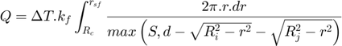
Where:
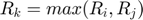
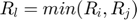
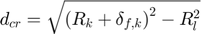
If 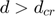:
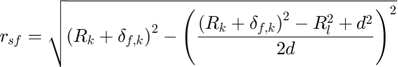
If 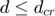:
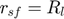
For mono-size particles, the analytical solution for the integral is:
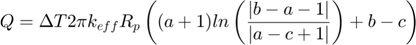
Where:
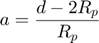
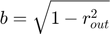
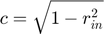
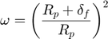
If 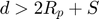:
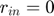
If 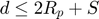:
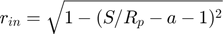
If  :
:
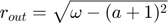
If 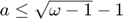:
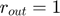
Notation:
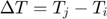: Temperature difference between elements i and j
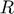: Radius of particles i and j (or p when mono-size)
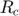: Contact radius
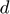: Distance between the center of the particles
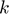: Thermal conductivity of particles i and j, and interstitial fluid f
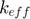: Effective contact conductivity
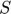: Minimum separation distance of surfaces (input)
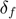: Thickness of a partilce's surrounding layer (input)
References:
- A.B. Morris, S. Pannala, Z. Ma and C.M. Hrenya. A conductive heat transfer model for particle flows over immersed surfaces, Int. J. Heat Mass Transf., 89:1277-1289, 2015 (analytical solution for mono-sized particles)
classdef ConductionIndirect_SurrLayer < ConductionIndirect
Public properties
properties (SetAccess = public, GetAccess = public)
coeff double = double.empty; % heat transfer coefficient
layer double = double.empty; % surrounding fluid layer thickness (ratio of particle radius)
dist_min double = double.empty; % minimum separation distance of surfaces
tol_abs double = double.empty; % absolute tolerance for numerical integration
tol_rel double = double.empty; % relative tolerance for numerical integration
end
Constructor method
methods
function this = ConductionIndirect_SurrLayer()
this = this@ConductionIndirect(ConductionIndirect.SURROUNDING_LAYER);
this = this.setDefaultProps();
end
end
Public methods: implementation of super-class declarations
methods
%------------------------------------------------------------------
function this = setDefaultProps(this)
this.layer = 0.4;
this.dist_min = 2.75*1e-8;
this.tol_abs = 1e-10;
this.tol_rel = 1e-6;
end
%------------------------------------------------------------------
function this = setFixParams(this,int,drv)
this.coeff = this.heatTransCoeff(int,drv);
end
%------------------------------------------------------------------
function this = setCteParams(this,~,~)
end
%------------------------------------------------------------------
function this = evalHeatRate(this,int,drv)
if (isempty(this.coeff))
h = this.heatTransCoeff(int,drv);
else
h = this.coeff;
end
this.total_hrate = h * (int.elem2.temperature-int.elem1.temperature);
end
end
Public methods: sub-class specifics
methods
%------------------------------------------------------------------
function h = heatTransCoeff(this,int,drv)
if (int.kinemat.gen_type == int.kinemat.PARTICLE_PARTICLE)
h = this.evalIntegralParticleParticle(int,drv);
else
% Assumption: walls are always considered as lines
h = this.analyticSolutionParticleWall(int,drv);
end
end
%------------------------------------------------------------------
function h = evalIntegralParticleParticle(this,int,drv)
% Needed properties
Rc = int.kinemat.contact_radius;
R1 = int.elem1.radius;
R2 = int.elem2.radius;
Ri = min(R1,R2);
Rj = max(R1,R2);
Lj = this.layer*Rj;
kf = drv.fluid.conduct;
d = int.kinemat.distc;
S = this.dist_min;
% Parameters
RjLj2 = (Rj+Lj)^2;
if (d <= sqrt(RjLj2-Ri^2))
rsf = Ri;
else
rsf = sqrt(RjLj2-((RjLj2-Ri^2+d^2)/(2*d))^2);
end
% Evaluate integral numerically
fun = @(r) 2*pi*r/max(S,d-sqrt(R1^2-r^2)-sqrt(R2^2-r^2));
try
h = kf * integral(fun,Rc,rsf,'ArrayValued',true,'AbsTol',this.tol_abs,'RelTol',this.tol_rel);
catch
h = 0;
end
end
%------------------------------------------------------------------
function h = analyticSolutionParticleWall(this,int,drv)
% Needed properties
Rp = int.elem1.radius;
L = this.layer*Rp;
kf = drv.fluid.conduct;
d = int.kinemat.dist;
dc = int.kinemat.distc;
S = this.dist_min;
% Parameters
a = (dc-Rp)/Rp;
if (d > Rp+S)
rin = 0;
else
rin = sqrt(1-(S/Rp-a-1)^2);
end
if (a > sqrt(((Rp+L)/Rp)^2-1)-1)
rout = sqrt(((Rp+L)/Rp)^2-(a+1)^2);
else
rout = 1;
end
b = sqrt(1-rout^2);
c = sqrt(1-rin^2);
% Analytic solution of integral
h = 2*pi*kf*Rp*((a+1)*log(abs(b-a-1)/abs(a-c+1))+b-c);
end
end
end